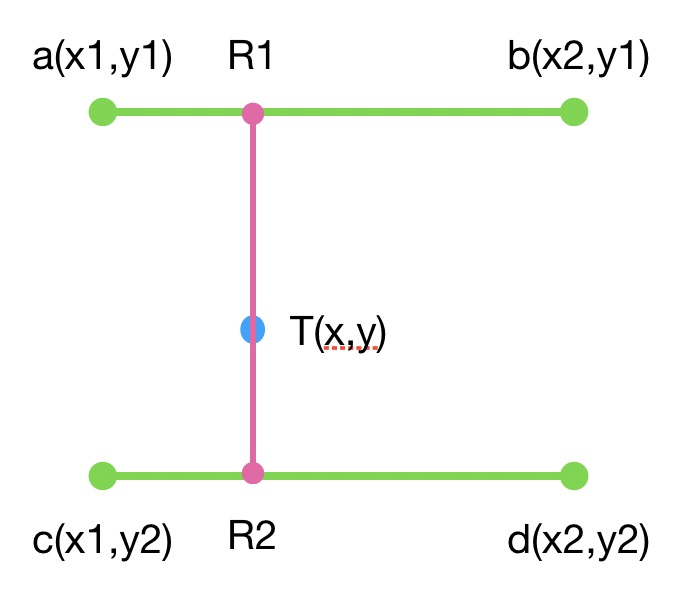
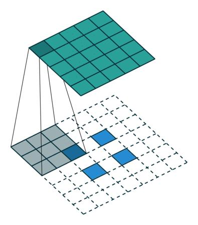
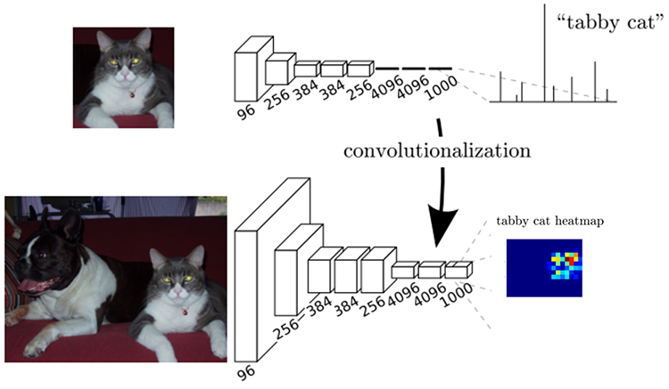

FCN
用神经网络做分割一个很大的问题是，如果我们该怎么对2维图像的每个像素都进行分类预测？ 之前我们在做分类任务时候，卷积后得到的feature map 越来越小，这和原图的尺寸就不匹配了。 一种想法是将输出的一维向量设置为原图宽乘高的长度，一维向量中每个输出代表原图中的一个像素。比如说输入是256256，那输出就是1256^2。但这样破坏了图像的空间信息，训练非常困难。 另一种想法是全部使用卷积，并且不使用pooling这种方式降低图像尺寸，这样的问题在于网络参数过多，且无法提取重要特征。
创新点
FCN的创新性有以下几点: - 1、既然转为一维的全连接层对分割任务无效，那就抛弃掉替换成卷积层。 - 2、之前卷积和池化层使特征图变小了，那就使用上采样层使特征图和输入尺寸相同。 - 3、使用跳跃连接（Skip Connection）将上采样后的特征图和主干网络中提取的特征图进行融合。
通过以上三点创新，FCN可以得到和原图一样尺寸的输出，实现端到端的训练和预测。 得益于该网络使用全卷积设计，可以对任意大小的输入图像进行像素级别的预测。FCN已经成为语义分割的基本框架，后续算法其实都是在这个框架中改进而来。
上采样
首先我们先介绍一个新的组件：上采样。
一般来说上采样可以采用两种方式，一种是采用插值等方式扩大特征图的尺寸。另一种是采用反卷积。
最近邻插值上采样
最近邻插值是最简单的一种插值方式，只需要通过映射，将原始图片中的像素值映射到放大后的图片中的每一个位置上即可。

如上图所示，原始的22的特征图如果想扩大两倍，就先构建一个44的特征图。并将原始坐标（x, y）处的值赋给 [(x2, y2), (x2+1, y2), (x2, y2+1), (x2+1, x2+1)]等四个坐标。
如果将原始坐标表示为, 目标坐标表示为 , 放大尺寸为scale，则最近邻插值更通用的表示为：
这里的符号 “/” 表示整除。
最近邻插值的优点是计算速度快、实现简单、不会出现模糊和不连续的情况。
但是，最近邻插值也有一些缺点，包括以下几点：
1、 采样点不连续：最近邻插值是通过选择最近的像素值来进行插值，因此插值点不一定与原始像素点的位置相邻。这会导致采样点不连续，从而可能会出现锯齿状的图像边缘。
2、像素值不连续：最近邻插值是通过选择最近的像素值来进行插值，因此插值点的像素值不一定连续。这会导致图像出现明显的块状效应，从而影响图像的视觉效果。
3、不适用于大尺寸缩放：最近邻插值是通过选择最近的像素值来进行插值，因此对于大尺寸的缩放，可能会出现过度像素化或者模糊的情况。因此，在进行大尺寸的缩放时，最近邻插值可能不是最佳的选择。
双线性插值上采样
双线性插值的思想是通过计算特征图中像素的加权平均值来进行上采样。具体来说，双线性插值会对特征图中每个像素周围的4个像素进行加权平均，从而得到上采样后的像素值。 这个加权平均的权重是通过距离像素位置的远近来计算的，距离越近的像素权重越大，距离越远的像素权重越小。

我们先来看如下一条线段，左边端点a=3，右侧端点b=8。现在想预测蓝色点的值，我们还知道蓝色点距a的距离为2，距b的距离为4。 那聪明的你肯定知道靠加权平均就可以最科学的猜到蓝色点的值，离得越近权重越大。即
没错恭喜你，你已经会一次线性插值了。但我们需要更通用一点，我们令a的坐标为x1，值为y1，记作(x1, y1)。 b(x2,y2), 蓝色点(x,y)。
化简的
那双线性插值就是将刚才的一维操作扩展到二维。如下图所示

现在我们考虑一下上图这种二维的情况。我们如果已知a,b,c,d四个值，想求T的值该怎么办？ 确实，先用两次线性插值得到R1，R2的值，再通过一次插值得到T就好了，没错，我们用数学公式表达一下这个过程
首先我们已知的a,b,c,d这些是坐标，所以我们希望用函数f表示对这个坐标在图像中取值,如f(a)。则
将f(R1), f(R2)代入f(T)可得:
又因为我们一般在做双线性插值时，a,b,c,d四个点是相邻的四个像素，所以存在y2-y1=1, x2-x1=1。代入上式的：
相对于最近邻插值和bicubic插值，双线性插值的计算需求，上采样后图像质量达到了均衡，因此使用场景最多。 但是在进行像素级别的预测时，它可能会出现模糊和不连续的情况。
反卷积上采样
反卷积(Transposed Convolution)，也被称为转置卷积。是一种卷积的逆操作，可以将特征图进行上采样。
在具体实现上，就是将特征图中的每个像素进行扩展，并将扩展后的像素与卷积核进行卷积，从而得到上采样后的特征图。而这里所说的拓展一般以补0的形式呈现。
如下图所示

如果希望对2*2的特征图进行反卷积，首先将它周围各自加两个padding，然后再利用3x3的卷积核进行卷积，可以得到深绿色4x4的特征图输出。 那是不是所有反卷积都是这样对周围进行padding呢？当然不是，因为如果只对最外缘做padding，很多是候得到的输出是没有信息的。 所以也经常会对特征图中间做padding，类似于

这样对特征图中间加了一行和一列的0值。得到的输出为5x5。那怎么控制边缘和中间增加的padding数目呢？ 在具体代码实现上，反卷积torch函数表达为
class torch.nn.ConvTranspose2d(in_channels, out_channels, kernel_size, stride=1, padding=0, output_padding=0, bias=True)
- in_channels, out_channels, kernel_size 与一般卷积相同，这里不再赘述。
- stride:步长。这里与卷积不同的地方在于，他控制输入特征图每行/列之间插入stride-1 行/列padding。而实际卷积得到输出的时候对补零后特征图执行步长为1的卷积。
- padding:这个也比较难以理解，当padding=0时，卷积核的起始位置和输入层相交一个像素，当padding=1时，卷积核的起始位置和输入层相交2个像素，以此类推。 如果用数学公式来表达的话，我们令反卷积中padding为p_{dec}, 一般卷积中padding为p，卷积核为k，则
- outpadding: 这个是我们常理解的padding，对输出的特征图边缘补多少0。
全连接层替换
FCN将分类网络中三层全连接层替换为卷积层，卷积核的大小(通道数，宽，高)分别为（4096,7,7）、（4096,1,1）、（1000,1,1）。 又由于网络中所有的层都是卷积层，故称为全卷积网络，这种网络可以接受任意尺度的输入。

上采样与短连接

我们可以看到这个网络整体有三层，我们依次介绍每层的工作。
- FCN-32s，直接对pool5 feature进行32倍上采样获得32x upsampled feature，再对32x upsampled feature每个点做softmax prediction获得32x upsampled feature prediction（即分割图）。
- FCN-16s，首先对pool5 feature进行2倍上采样获得2x upsampled feature，再把pool4 feature和2x upsampled feature逐点相加，然后对相加的feature进行16倍上采样，并softmax prediction，获得16x upsampled feature prediction。
- FCN-8s，首先进行pool4+2x upsampled feature逐点相加，然后又进行pool3+2x upsampled逐点相加，即进行更多次特征融合。具体过程与16s类似，不再赘述。
这里的上采样采用反卷积实现。
三者的结果如下图所示：

可以看出效果：FCN-32s < FCN-16s < FCN-8s，即使用多层feature融合有利于提高分割准确性。